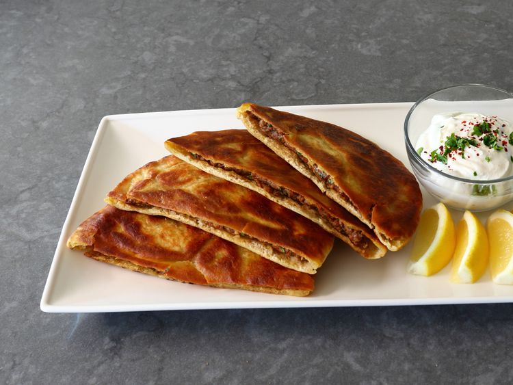

Arayes (Lebanese Crispy Meat Stuffed Pita) Recipe

Arayes (Lebanese crispy meat stuffed pitas) are a delicious marriage of spicy, aromatic meat filling with golden, crisp pan-fried pita. A tahini yogurt sauce is served alongside.
Ingredients
- 12 ounces ground lamb, beef, or turkey
- 1/4 cup chopped parsley
- 3 cloves garlic, finely minced
- 3 tablespoons grated yellow onion
- 1 1/2 teaspoons ground cumin
- 1 1/2 teaspoons ground coriander
- 1 teaspoon smoked paprika
- 1/4 teaspoon ground allspice
- 1/8 teaspoon cayenne pepper
- 1 teaspoon kosher salt
- 1/2 teaspoon freshly ground black pepper
- 1 rounded tablespoon tahini
- 1 tablespoon lemon juice
- 1 tablespoon water
- 1/2 cup plain Greek yogurt
- 1 clove garlic, finely grated
- 1 pinch cayenne pepper
- 1/4 teaspoon kosher salt, or to taste
- 2 pita breads
- 3 tablespoons olive oil for pan-frying
- lemon wedges (optional)
Steps
- Add meat to a bowl and sprinkle with parsley, minced garlic, onion, cumin, coriander, smoked paprika, allspice, 1 teaspoon cayenne, 1 teaspoon salt, and black pepper. Use a fork or your hands to mix everything evenly. Cover and chill at least 1 hour and up to 12 hours.
- For the sauce, add tahini, lemon juice, and water to a microwave-safe bowl and cook on High until very hot, about 30 seconds. Add to a bowl with yogurt, grated garlic, pinch cayenne, and 1/4 teaspoon salt. Whisk until smooth and light. Chill until needed.
- Cut each pita in half and carefully open up without tearing the edges. Pitas can be warmed in a dry pan to soften them, which can make opening easier.
- Divide meat into 4 equal portions, and transfer into each pita half. Press and squeeze pita gently to distribute meat in an even layer that comes all the way to the cut side.
- Heat olive oil over medium heat. Cook each stuffed pita until meat is cooked through and bread is nicely browned and crispy, 3 to 4 minutes per side. Serve hot with sauce on the side.